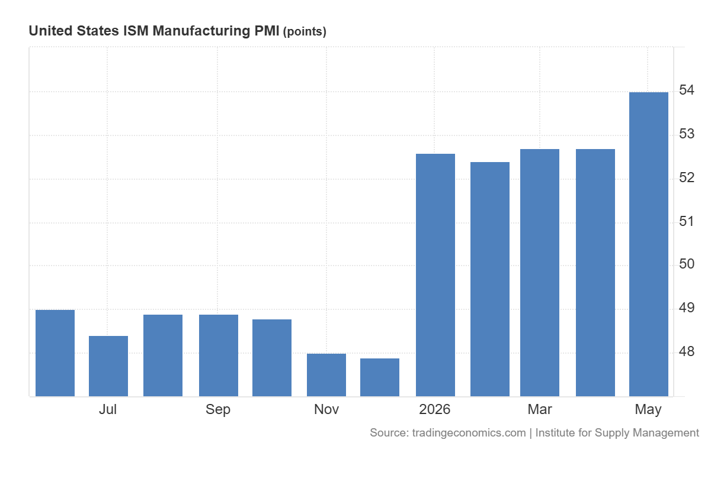

14/06/26 - 20/06/26
10 min read
Choose Language (Translation Errors may occur)
Disclaimer: The information provided is for educational purposes only. It does not constitute financial, investment, or personal advice. I am not a financial advisor or professional – I don’t know anything about the market or how it will perform (notice how I've used words like "perhaps" or "maybe"), thus the content here should not be taken as financial guidance. I am not a CFP, CPA, PFP or local legal equivalent, please seek professionals for financial advice, and by reading this you agree that I am not liable if I am wrong. Do your own research. The strategies, products, or services here are not being recommended, endorsed, or guaranteed. Past performance is not indicative of future results, and all investments carry risk, including the potential loss of principal.
Weekly Summary
- The war might actually end (for real this time)! US and Iran have agreed to extend the ceasefire and re-open the Strait of Hormuz, with the memorandum of understanding to be signed on Friday. The US also considers a 300 billion USD investment fund for Iran to rebuild their country, if the deal is upheld (England and Hauslohner). Global stocks and bonds rose as traders now expect falling oil prices and lower interest rates.
- Since the war, investors have regained confidence in the US dollar. This is due to AI-driven growth from big tech, and the lasting inflationary effects from the war which causes the FED to keep interest rates high. Hmm, you might say, the latter statement about inflation seems innacurate: since the war is over, won't prices revert back to the norm shortly? Not necessarily. Shipping equipment and oil and gas refineries have been damaged in the gulf, which may take a few years to repair. Iran still needs 30 days to clear the remaining mines from the Strait, and realistically, it may take some time before oil tankers are willing to fully resume shipping. That's why oil futures still trade at about $80 US dollars a barrel, compared to $60 before the war.
- Also, core inflation (inflation which excludes food and energy prices), rose by 0.1 percentage points to 2.9% in May, so realistically, the FED probably isn't going to cut rates any time soon.
- Traders expect interest rates to rise as 9 FOMC members support a rate hike in the last FOMC meeting. In his first meeting as FED chair, Warsh says that a rate hike soon is possible, causing bond yields to rise.
- Countries such as France, India, Germany and Austria have been repatriating gold reserves held in the UK and US (Hook and Kaushik). Maybe it's just me, but I believe that distrust between countries is growing, and the need for self-reliance / self-sufficiency amongst critical industries, food, and foreign reserves is more important than ever.
Updates on Individual Stocks
- Shares in SpaceX rose by 19% in the first day of the IPO, making Musk the world's first trillionaire. A week after its debut, SpaceX plans on issuing $20 billion USD worth of 10-year bonds, providing a yield of 1.35 - 1.5 percentage points above US treasuries (Smith et al.). Personally, I think this is one big red flag. Even if SpaceX were to eventually colonise Mars and build data centres in space, the large amount of capital expenditure, borrowing, and negative free cash flow makes this investment risky.
- Nvidia plans to sell 25 billion USD of debt, issuing securities with durations of 2 - 30 years, and yielding 0.5 percentage points above the corresponding US treasuries (Bradshaw and Chan).
- Samsung and SK Hynix shared semiconductor profits with their factory workers, giving bonuses of approximately 600 million Won per worker. This has in turn increased discresionary spending on luxury products, and many investing into domestic real estate, placing upward pressure on prices (Tudor).
Happy days?
Geopolitics, briefly, got less bad. With the US-Iran war de-escalating, one immediate implication is that inflation might actually return to normal levels, or at least stop increasing as much. Even though interest rates might increase in the short-term under a hawkish FED, there is still signs of optimism in the next few years. Reacting to the ceasefire, the market has responded in the usual way; VIX, the volatility index, dropped more than 20% in a week, which is what volatility does when people decide that maybe nothing terrible will happen - at least not immediately.
So the obvious question is whether this is the all clear signal. Do stocks go up from here? Do we just resume the regularly scheduled AI-led rally?
In one sense, nothing has changed. Big Tech is still spending enormous amounts on AI infrastructure. CAPEX continues to climb, which is fine, except its reducing free cash flow. Some of these companies are funding growth not with excess cash, but by issuing equity. That is slightly less "self-funding innovation" and slightly more "the market will pay for this". And this works as long as the market is willing.

The ISM Manufacturing PMI increased to 54 in May (Trading Economics).
And the market, for now, is willing. There is still a large pool of liquidity sitting in money market funds (MMF), and deals are being absorbed without much friction. If we look at the data, it doesn't reveal a collapse in confidence. US business sentiment remains solid, and the ISM Manufacturing PMI ticking up to 54 suggests expansion. Companies generally do not increase production unless they expect demand to follow. Thus, this looks like an economy that is still functioning reasonably well.
But markets are not just about data; investors care about positioning and behavior. And behavior is starting to look reckless and speculative (I think I have reiterated my thesis too many times). The same environment that supports aggressive AI CAPEX and equity issuance also supports risk-taking more broadly. In the short-term, this is fine; but, we need to keep in mind that it does not take a large event to cause a large move.
Bibliography
- Bradshaw, Tim, and Michelle Chan. “Chipmaker Nvidia Seeks to Raise over $25bn in First Bond Deal since 2021.” @FinancialTimes, Financial Times, 15 June 2026, www.ft.com/content/c0e7cc58-e309-4f47-b466-d577c06cbeec?syn-25a6b1a6=1. Accessed 16 June 2026.
- England, Andrew, and Abigail Hauslohner. “Trump Administration Considers $300bn Fund for Iran If Deal Is Upheld.” @FinancialTimes, Financial Times, 15 June 2026, www.ft.com/content/088c14d3-f708-44d8-a306-7996aa5211de?syn-25a6b1a6=1. Accessed 16 June 2026.
- Hook, Leslie, and Krishn Kaushik. “Central Banks Repatriate Gold as Global Insecurity Rises.” @FinancialTimes, Financial Times, 16 June 2026, www.ft.com/content/c7164737-2988-4f1c-aba4-244bda4844c7?syn-25a6b1a6=1. Accessed 17 June 2026.
- Smith, Brian W., et al. “SpaceX Bankers Prepare for Bond Sale of at Least $20 Billion.” Bloomberg.com, Bloomberg, 18 June 2026, www.bloomberg.com/news/articles/2026-06-18/spacex-bankers-preparing-for-bond-sale-of-at-least-20-billion. Accessed 19 June 2026.
- Trading Economics. “United States ISM Purchasing Managers Index (PMI) | 1948-2020 Data.” Tradingeconomics.com, 19 June 2026, tradingeconomics.com/united-states/business-confidence. Accessed 19 June 2026.
- Tudor, Daniel. “AI Riches Turn Samsung Factory Town into Luxury Hotspot.” @FinancialTimes, Financial Times, 13 June 2026, www.ft.com/content/52cdae7d-5553-4b8b-9fd7-90c167e9c1a4. Accessed 13 June 2026.